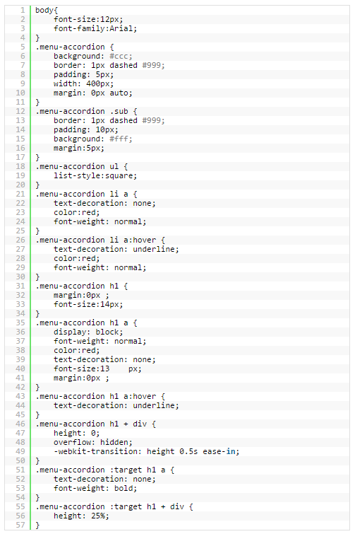
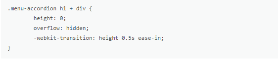

Sekarang kita lanjut ke pembuatan komponen yang paling penting, yaitu CSS-nya. Mungkin jika ada yang membuka file demo-nya menggunakan firefox, efek transisinya tidak akan berjalan. Dan jika dibuka dengan menggunakan Chrome, maka efek transisinya akan terlihat. Saya juga kurang tau apa penyebabnya tersebut.

Untuk menghasilkan efek transisi, kita menggunakan fungsi -webkit-transition yang dimiliki oleh CSS3. Disini kita bisa mengatur berapa kecepatan efek transisi yang dihasilkan, sama seperti fungsi slideDown() dan slideUp() pada jQuery.
